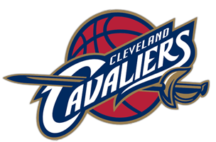
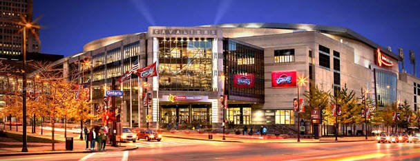

Welcome to Cleveland!
Cleveland Cavaliers (también conocidos como Cavs) (en español: Caballeros de Cleveland) es un equipo profesional de baloncesto de la NBA con sede en Cleveland, en el estado de Ohio.

Disputan sus partidos como local desde 1994 en el Quicken Loans Arena, un estadio con capacidad para 20.562 espectadores. Ganaron su primer título de la NBA en la temporada 2015-16.
